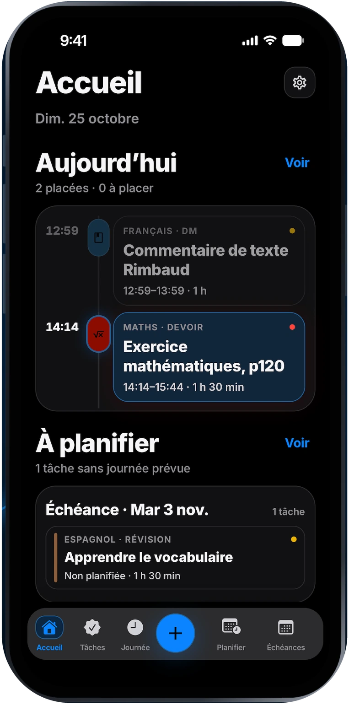
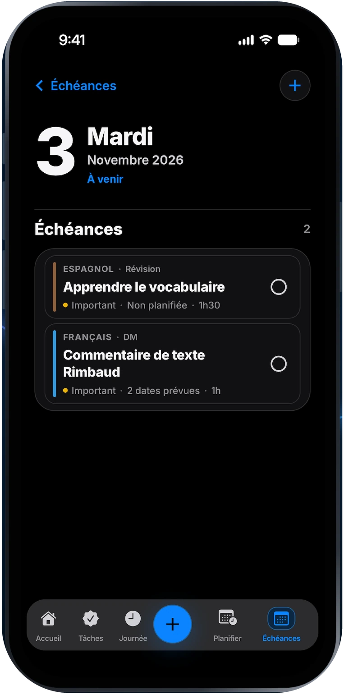
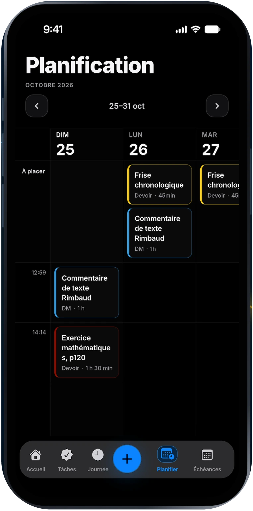
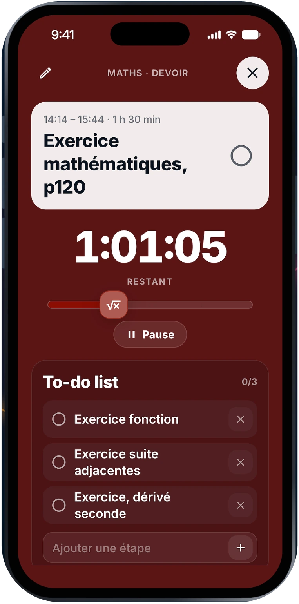
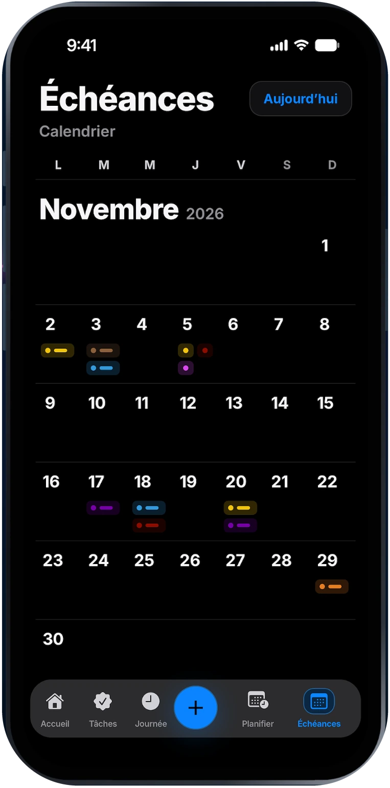

01 — ACCUEILTa journée,
Ta journée,
d’un coup d’œil.
Visualise ce qui est prévu, ce qui reste à placer et tes échéances, au même endroit.
Tout ce qui compte, sans chercher.
UNE ORGANISATION QUI SUIT TON RYTHME
Tâches, planning, échéances et Focus. Paratus t’aide à garder le cap, chaque jour.
iPhone & iPad · Pensé pour ton quotidien

CHAQUE MOMENT COMPTE
Du premier coup d’œil au dernier créneau, ton organisation suit ton rythme.
Sélectionne une tâche pour suivre le fil de la journée
PARATUS EN ACTION
Un aperçu rapide de Paratus, de la création d’une tâche jusqu’au suivi de la journée.

DÉCOUVRE PARATUS
Tout ce dont tu as besoin pour organiser ton temps, sans t’éparpiller.
Visualise ce qui est prévu, ce qui reste à placer et tes échéances, au même endroit.
Tout ce qui compte, sans chercher.
Répartis tes activités entre tes journées, repère tes créneaux et garde une vue d’ensemble.
Du temps pour chaque chose.
Un minuteur, ta tâche en cours et une liste d’étapes. Juste ce qu’il faut pour avancer.
Une tâche à la fois.
Anticipe tes échéances sur un calendrier clair, et retrouve le détail de chaque date.
Pour ne rien laisser de côté.
ET MAINTENANT ?
Paratus se prépare à arriver sur l’App Store. En attendant, découvre comment l’application fonctionne.
Vidéo existante du site officiel, chargée lorsque tu la lances.